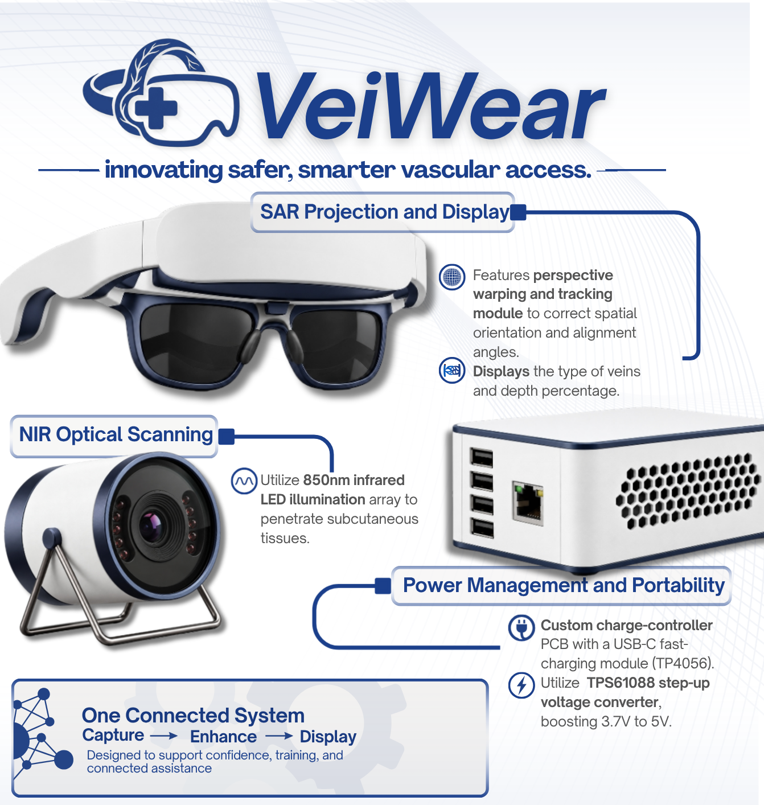

VeiWear is an edge-computing wearable vein visualization system designed for supervised clinical training. Combining 850nm near-infrared imaging with real-time AR, it leaves both hands completely free.

For infants, elderly patients, and others with challenging veins, another attempt means more pain, fear, and greater distress.
Healthcare workers miss the vein on the very first poke up to 50% of the time in difficult scenarios, leading to repeated needle insertions, vessel transfixation, and hematoma formation.
According to a SunStar report, a Cebuano family filed a ₱5.2 million lawsuit alleging improper IV insertion permanently scarred a newborn's hand. A 2024 Acta Medica Philippina report also documented nerve injuries following venipuncture.
Aims to support safer and more efficient vein identification, minimizing patient distress and procedure time.
Helps healthcare students develop practical skills in vein visualization before touching live patients.
Advancing accessible, low-cost technology infrastructure that addresses critical healthcare needs.
A closed-loop optical pipeline running locally on embedded hardware.
An 850nm active near-infrared LED array illuminates subcutaneous tissue. Hemoglobin absorbs the IR radiation while tissue reflects it into a camera.
A Raspberry Pi processes the image using CLAHE, a contrast-enhancement technique intended to make vein patterns easier to distinguish.
A near-eye display presents the processed image to the wearer. Features perspective warping and tracking to correct spatial orientation.
A PESTEL-validated approach targeting institutional academic adoption.
Covers hardware, fabrication, integration, and testing.
Estimated hardware cost per unit at scale.
Accessible institutional pricing for laboratories.
Comparing VeiWear against imported commercial scanners.
| Parameters | VeiWear (UgatFinder) | AimVein Pro 3.0 | VeinViewer Flex | AccuVein AV500 |
|---|---|---|---|---|
| Price Target | ₱30,000 Educational |
₱149,097 | ₱372,589 | ₱384,145 |
| Core Tech | Edge NIR + SAR | NIR Projection | NIR Projection | NIR Laser |
| Volumetric Depth | ✓ Submillimeter | ✗ 2D Surface | ✗ 2D Surface | ✗ 2D Surface |
| Hands-Free | ✓ Wearable Default | ⚠ Optional Stand | ⚠ Optional Arm | ⚠ Optional Pole |
| Curved Skin | ✓ Auto-Aligned AR | ✗ Distorts | ✗ Distorts | ⚠ Angle-Sensitive |
A structured validation framework taking VeiWear from engineering bench to institutional adoption.
We are currently developing a functional alpha prototype to demonstrate its core vein visualization capabilities. Validating 850nm NIR video acquisition and CLAHE algorithms within a ₱15,000 dev budget.
Moving to supervised testing with a small group of students, clinical instructors, and medical practitioners to evaluate performance, comfort, and ease of use.
Following a continuous improvement cycle—gathering user feedback, addressing lag or alignment issues, refining the design, and retesting.
Exploring additional features to produce a more accessible tool. Depth estimation is a proposed add-on subject to further research and validation. Scaling to 20 pilot units.
Comprehensive answers spanning clinical use, finance, and engineering.